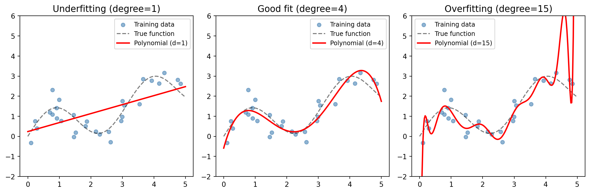

import numpy as np
import matplotlib.pyplot as plt
np.random.seed(42)
# 真实函数
def f_true(x):
return np.sin(2 * x) + 0.5 * x
# 生成数据
n = 30
x_train = np.sort(np.random.uniform(0, 5, n))
y_train = f_true(x_train) + np.random.normal(0, 0.5, n)
x_test = np.linspace(0, 5, 200)
y_true = f_true(x_test)
fig, axes = plt.subplots(1, 3, figsize=(12, 4))
titles = ['Underfitting (degree=1)', 'Good fit (degree=4)', 'Overfitting (degree=15)']
degrees = [1, 4, 15]
for ax, deg, title in zip(axes, degrees, titles):
coeffs = np.polyfit(x_train, y_train, deg)
y_pred = np.polyval(coeffs, x_test)
ax.scatter(x_train, y_train, c='steelblue', alpha=0.6, s=30, label='Training data')
ax.plot(x_test, y_true, 'k--', alpha=0.5, label='True function')
ax.plot(x_test, y_pred, 'r-', linewidth=2, label=f'Polynomial (d={deg})')
ax.set_title(title, fontsize=13)
ax.set_ylim(-2, 6)
ax.legend(fontsize=9)
plt.tight_layout()
plt.show()